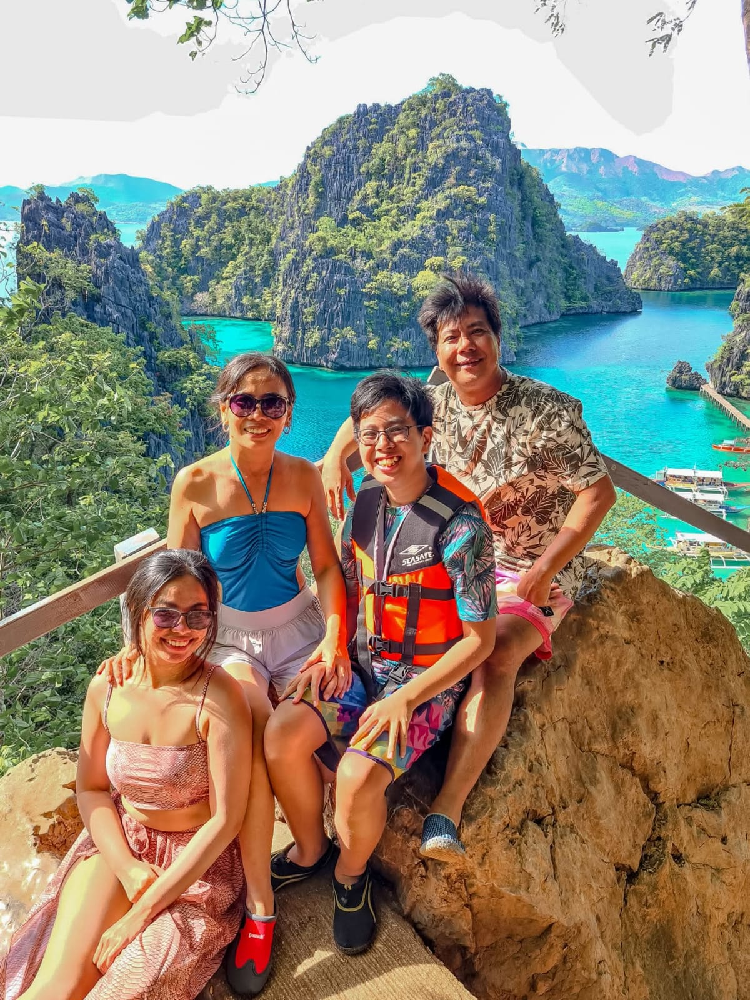
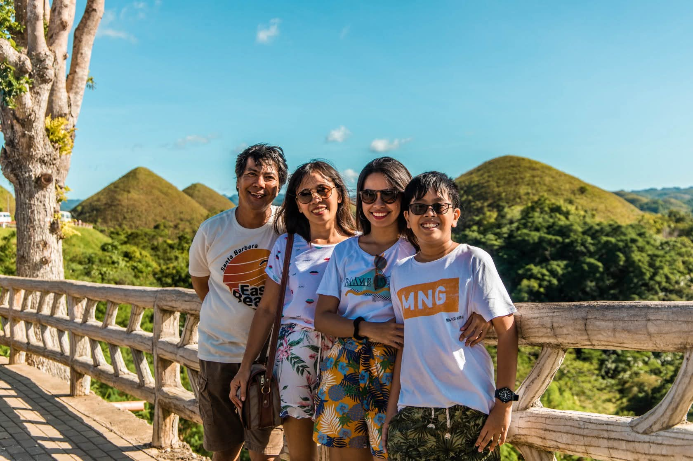
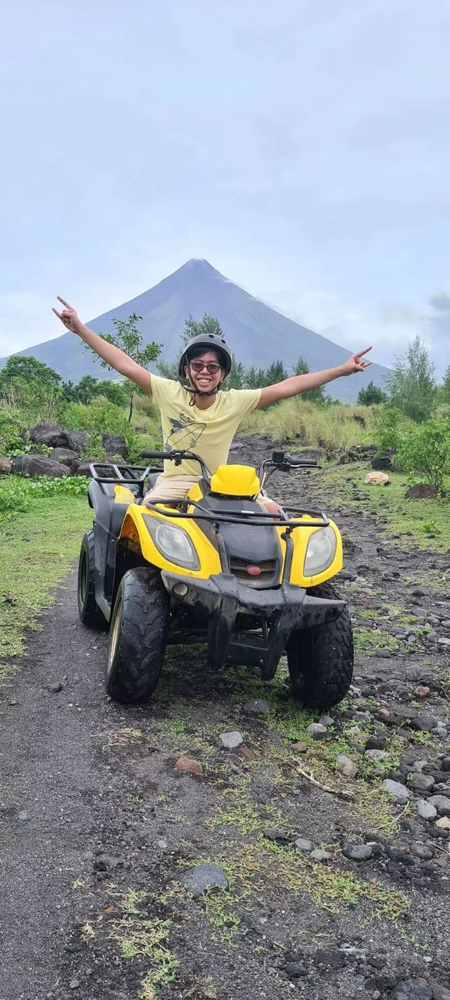
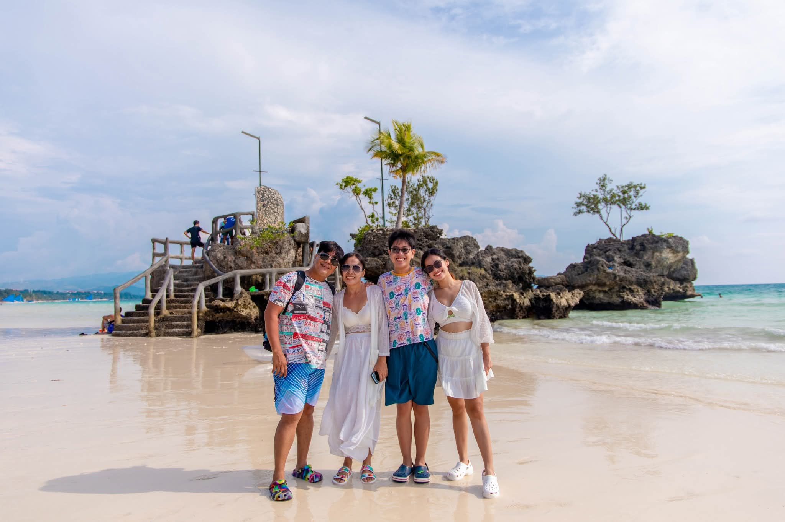
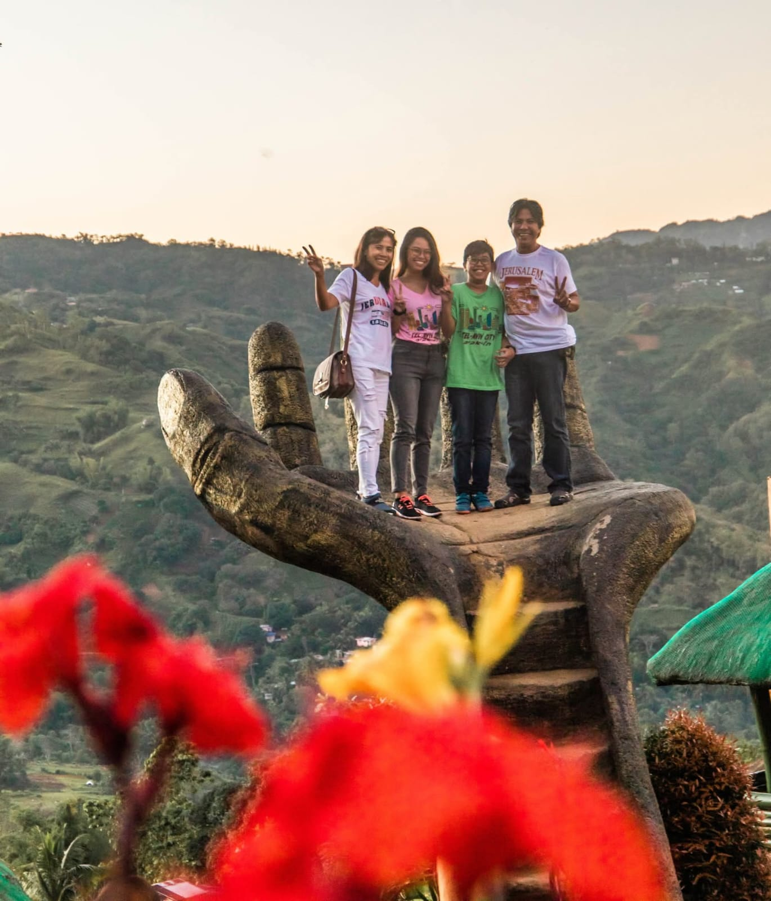
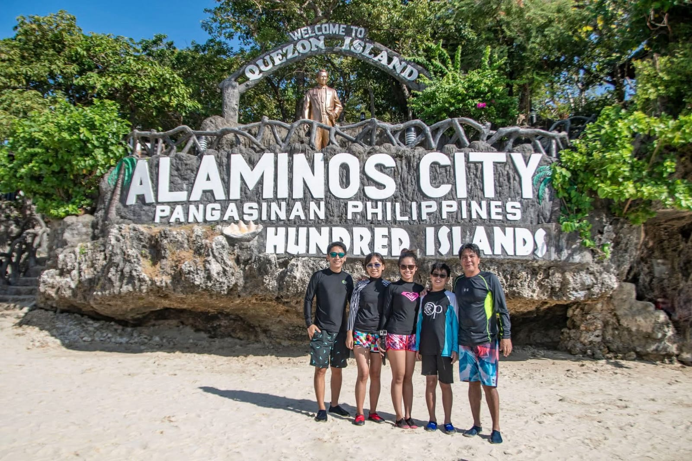
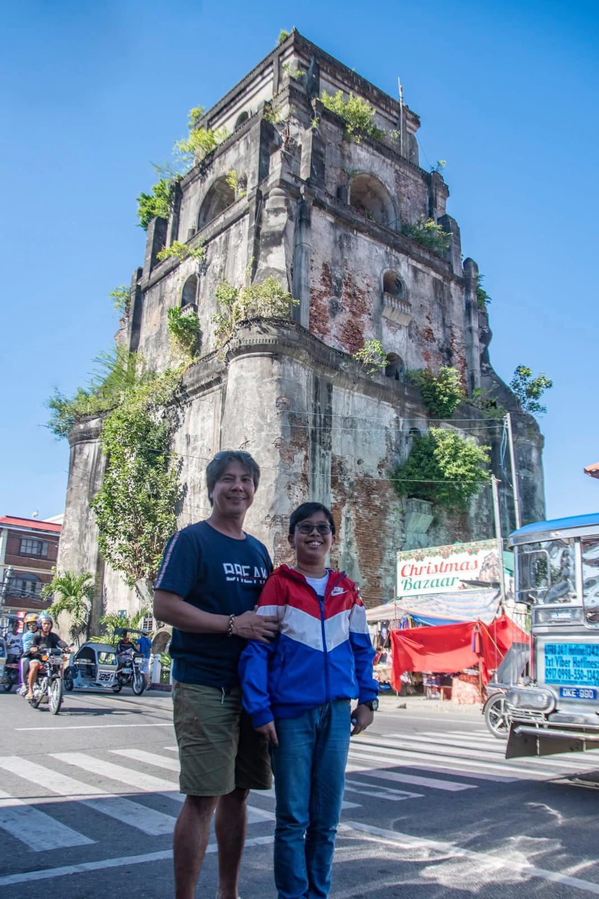
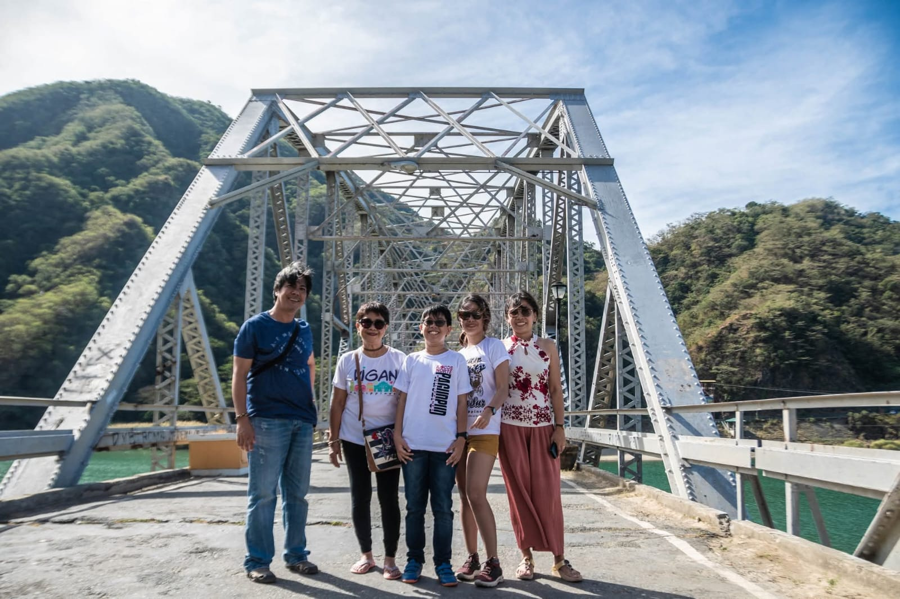
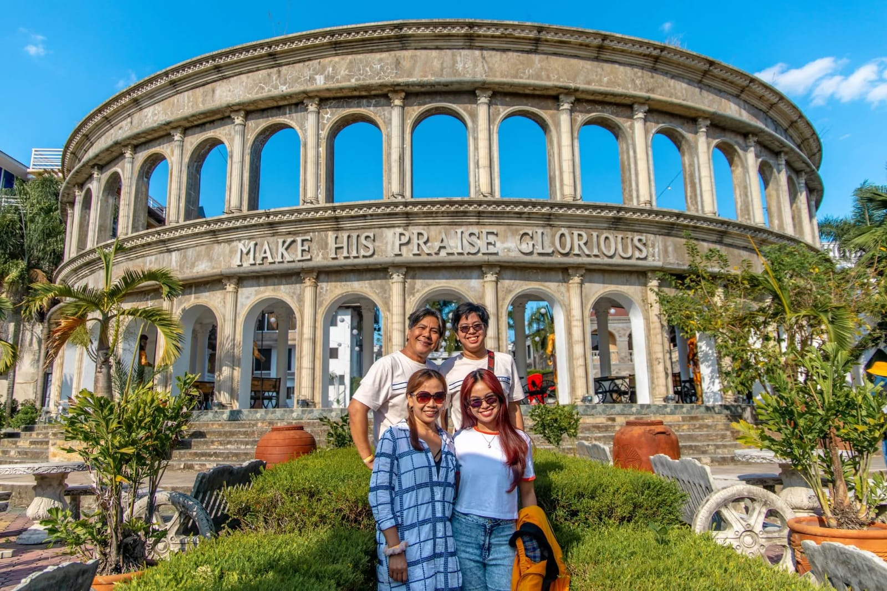

Coron, Palawan
A coastal overlook above turquoise waters and steep limestone cliffs, near Kayangan Lake on Coron Island in Palawan.
MY GALLERY
A little collection of family adventures, memorable trips, and special moments worth looking back on. Each picture tells a story, and here’s where I get to share a few of them!

A coastal overlook above turquoise waters and steep limestone cliffs, near Kayangan Lake on Coron Island in Palawan.

The world-famous Chocolate Hills, consisting of 1,268 cone-shaped hills that turn brown during the summer. Since we visited in December, the hills were quite green and covered in grass.

Admiring the majestic Mt. Mayon! Visiting Albay wouldn’t be complete without experiencing the Mayon Volcano ATV Ride.

One of the iconic must-see sites in Boracay, located at the end of Station 1.

Dubbed the “Little Amsterdam” or “Mini Holland” of Cebu, this is an 8,000-square-meter piece of elevated land.

An absolutely classic and breathtaking island-hopping destination in the Philippines! Renting a traditional motorized outrigger boat allowed us to explore several unique islets, each offering its own stunning scenery, crystal-clear waters, and tropical charm.

The mysterious bell tower of Laoag City continues to spark the curiosity of people visiting Ilocos Norte. It is believed that the tower is sinking at a rate of about an inch per year. There are no conclusive scientific explanations for this phenomenon, but one widely accepted theory suggests that the tower’s location on sandy ground, combined with its heavy and massive structure, is causing it to slowly sink into the earth.

Named after the 6th President of the Philippines, Elpidio Quirino, this bridge is also known as the Banaoang Bridge. It offers a picturesque view of the Lagben River and is surrounded by magnificent mountains, making it a truly beautiful sight. This 456-meter-long historic bridge is now impassable and partially collapsed after Super Typhoon Egay (Doksuri) swept away major sections of the bridge on July 26, 2023.

The Greece and Rome of the North.
An around-the-world experience without the need for a passport or visa! A miniature showcase of famous tourist attractions from different countries.